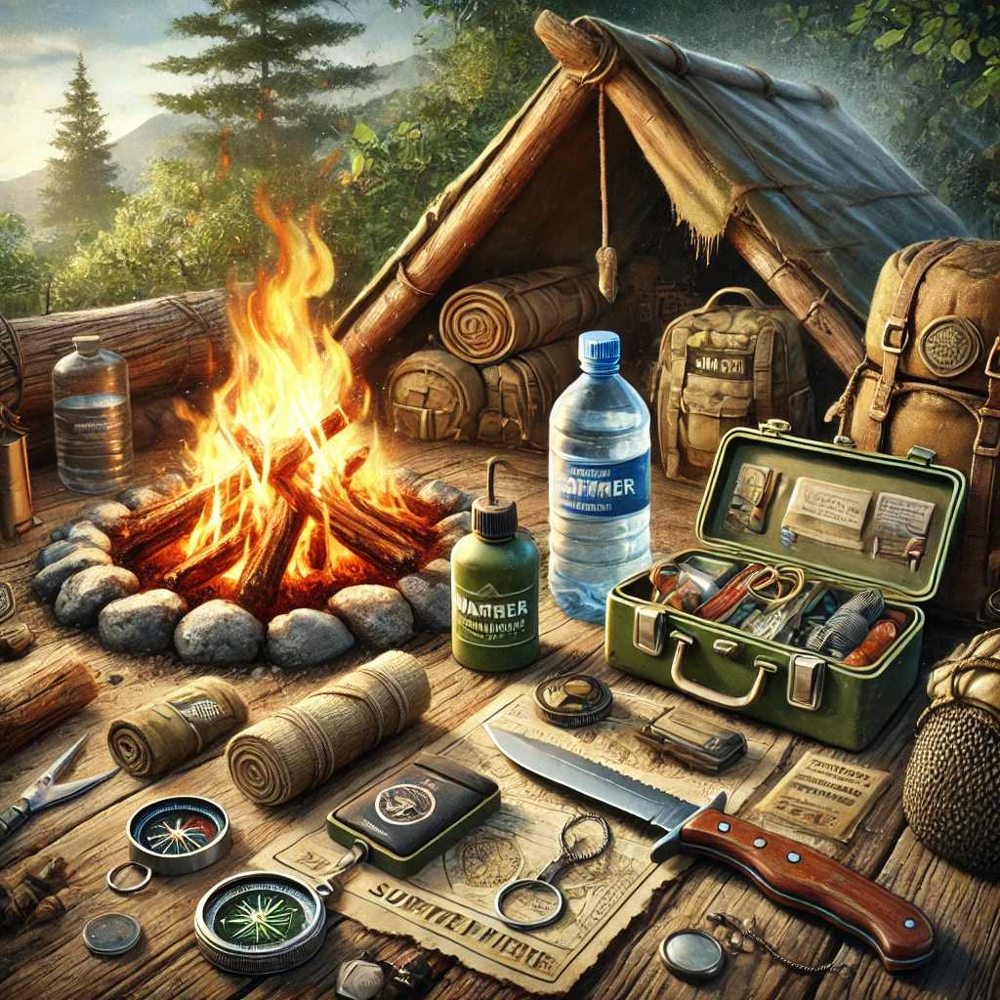

10 Essential Survival Skills Everyone Should Know
In an emergency or survival situation, having the right skills can make all the difference. Whether you're lost in the wilderness or facing a natural disaster, these essential survival skills will help you stay safe and increase your chances of survival.
1. Building a Fire
Fire provides warmth, light, and a way to cook food. It can also signal for help. Learn how to start a fire using various methods, such as matches, lighters, fire strikers, and even friction-based techniques like the bow drill.
Steps to Build a Fire:
- Gather tinder, kindling, and fuel wood.
- Create a fire structure, such as a teepee or log cabin.
- Ignite the tinder and gradually add kindling.
- Once the kindling is burning well, add larger pieces of fuel wood.
2. Finding and Purifying Water
Water is crucial for survival. Know how to find water sources in the wild, such as streams, rivers, and lakes. Purify the water using boiling, water purification tablets, or filters to make it safe to drink.
Methods of Purification:
- Boiling
- Water purification tablets
- Portable water filters
- Solar stills
3. Constructing a Shelter
A shelter protects you from the elements and provides a safe place to rest. Learn how to build various types of shelters, such as lean-tos, debris huts, and A-frame shelters, using natural materials and available resources.
Basic Shelter Building:
- Choose a suitable location.
- Collect materials like branches, leaves, and debris.
- Construct a framework and cover it with insulating materials.
4. Signaling for Help
In a survival situation, attracting attention to your location can lead to rescue. Use signaling techniques like mirrors, whistles, flares, and signal fires to alert rescuers to your presence.
Effective Signaling Techniques:
- Use a signal mirror to reflect sunlight.
- Create large ground signals with rocks or logs.
- Build a signal fire with green vegetation to create smoke.
5. Basic First Aid
Knowing basic first aid can save lives. Learn how to treat common injuries such as cuts, burns, fractures, and hypothermia. Keep a well-stocked first aid kit and know how to use it.
Key First Aid Skills:
- Stop bleeding with pressure and bandages.
- Clean and dress wounds to prevent infection.
- Treat burns with cool water and sterile dressings.
- Recognize and respond to signs of shock and hypothermia.
6. Navigation Without a Compass
Being able to navigate without a compass is essential if you become lost. Learn how to use the sun, stars, and natural landmarks to find your way.
Natural Navigation Tips:
- Use the position of the sun to determine direction.
- At night, find the North Star for orientation.
- Follow natural features like rivers and ridges.
7. Finding Food
Knowing how to find food in the wild can sustain you. Learn about edible plants, insects, and how to trap small animals. Foraging skills and basic hunting techniques are invaluable.
Foraging and Hunting:
- Identify safe-to-eat plants and berries.
- Learn to fish using improvised tools.
- Set simple traps and snares for small game.
8. Tying Knots
Knots are useful for building shelters, securing gear, and creating traps. Master a few essential knots like the bowline, square knot, and clove hitch.
Essential Knots to Learn:
- Bowline: for creating a secure loop.
- Square Knot: for tying two ropes together.
- Clove Hitch: for securing a rope to a post or tree.
9. Mental Preparedness
Staying calm and focused is crucial in a survival situation. Practice mental resilience, stay positive, and make a plan to tackle challenges methodically.
Tips for Mental Toughness:
- Stay calm and avoid panic.
- Focus on immediate needs and priorities.
- Keep a positive attitude and visualize success.
10. Self-Defense
Protecting yourself from threats, both human and animal, is essential. Learn basic self-defense techniques and how to use improvised weapons.
Basic Self-Defense Techniques:
- Learn to strike vulnerable areas.
- Practice escape moves from holds and grabs.
- Use sticks, rocks, or other objects as improvised weapons.
By mastering these essential survival skills, you’ll be better prepared to handle any emergency or survival scenario. Practice regularly and keep your skills sharp, so you're ready when you need them most.